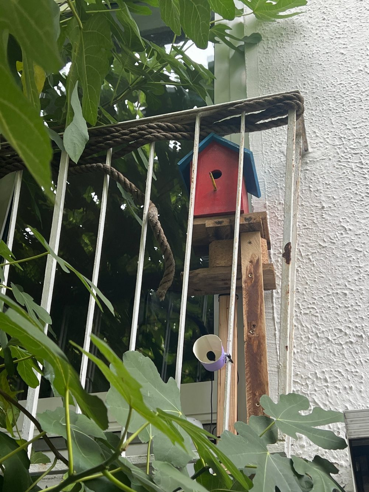

The Listening Nest Box
A camera and a microphone in an ordinary tit nest box, a Raspberry Pi 5 that watches both, and a phone that buzzes when somebody moves in. Everything runs at home, nothing is sent to the cloud.
This box has never received a firmware update from any agency. As far as we know.

What it does
- Sees into the box with an infrared-sensitive camera and a small IR light, day and night.
- Listens outside with a USB microphone and names the birds that sing nearby (BirdNET-Pi).
- Notices movement in the box, checks it with a small object-detection model and tells Home Assistant.
- Tells me with a push message on the phone, a "bird present" tile on the dashboard, and a live picture on iPhone and Apple TV.
Status: installed in October 2026 and running through the winter. Real nesting results will follow in spring, so the results page is honest about being short for now.
How the pieces fit
camera + IR light (inside the box)
|
Raspberry Pi 5 -- USB microphone (outside)
| \
| +-- BirdNET-Pi: bird songs, web interface
|
MediaMTX -- RTSP / WebRTC stream
|
+-- watch.py: motion -> bird check -> webhook
| |
| Home Assistant
| | |
| push message dashboard tile
|
Home Assistant camera -> HomeKit -> iPhone / Apple TVRead on
HardwareParts, wiring, the IR light, the box.
Live streamCamera to RTSP and WebRTC with MediaMTX.
Bird soundsBirdNET-Pi and the outdoor microphone.
DetectionThe full watch script and how it decides.
Home AssistantPush, dashboard tile, live picture on Apple TV.
ResultsWhat worked, what did not, what comes next.
Principles
- Local only. The stream stays in the home network, recordings are not uploaded anywhere.
- No usage data. Every library that can phone home is switched off (see Detection).
- Disturb the birds as little as possible. The IR light is invisible to birds at 850 nm; still, check the local rules for watching nesting birds and keep the box closed during breeding.